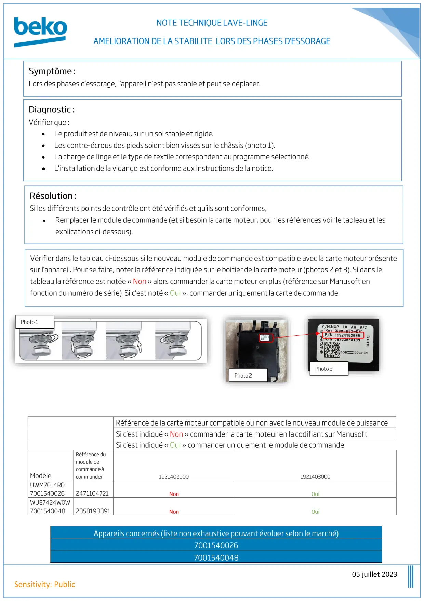

Note Technique lave linge = Amélioration de la stabilité lors des phases d'essorage bulletin 4

05 juillet 2023Sensitivity: Public•••••
1 / 1


Gros électroménager
Ressources techniques SAV — Beko · Grundig · Whirlpool · Hotpoint · Indesit.
